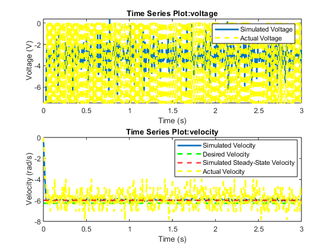

Runmotorsim.m
This script runs a simulation of a motor and plots the results alongside real data from motors
required file: motor_control.slx
Contents
Define motor parameters
%k and sigma chosen such that simulation matches motors as much as possible % k=1.9; % DC gain [rad/Vs] sigma=18; % time constant reciprocal [1/s] % %The image below depicts the results from simulating setting the motor %voltage to 3.76V using the above parameters, compared with the actual real %world data of doing the same. The big idea is that the parameters above %allow the simulation to be as close to the real world system as possible, %give or take some noise. % imshow('comparison.png')

Define control system gain
%Gain Kp chosen such that simulated steady state velocity is within 20% of %desired, without allowing system to be affected by noise too much % Kp = 10; % %The image below depicts the control simulation being set to 1 rad/s, with %a gain of 10. The big idea is that the steady state velocity is able to %get within 20% of the set value of 1 rad/s. % imshow('Kpsimulation.png') % %load 3 second control data from file (run motorControlAdvanced.ino and %copy serial data to controlData.mat) % load('controlData.mat');
Run a Simulation
open_system('motor_control') % % run the simulation % out=sim('motor_control');
A Plot of the results
%The plot below shows the same control simulation as before being %run with gain Kp set to 10. However, the set velocity is -6.28 (-2PI) %rad/s, and data taken from the real world motor with the same setup is %shown on top of it. The big idea is that the real world motor is able to %reasonable achieve our set value in a similar fashion as our simulation, %albeit with some noise in the mix. % figure subplot(2,1,1) plot(out.Voltage,'LineWidth',2) hold on plot(data3(:,1),data3(:,2),'y--','linewidth',2) hold off xlabel('Time (s)') ylabel('Voltage (V)') legend('Simulated Voltage', 'Actual Voltage') subplot(2,1,2) plot(out.Velocity,'linewidth',2) hold on plot(out.DesiredVelocity,'g--','linewidth',2) % Compute steady-state velocity (final value of the sim) v_ss = out.Velocity.Data(end); % Add a horizontal line for steady-state velocity yline(v_ss,'r--','LineWidth',2) plot(data3(:,1),data3(:,3),'y--','linewidth',2) hold off xlabel('Time (s)') ylabel('Velocity (rad/s)') legend('Simulated Velocity','Desired Velocity','Simulated Steady-State Velocity', 'Actual Velocity','Location','best')